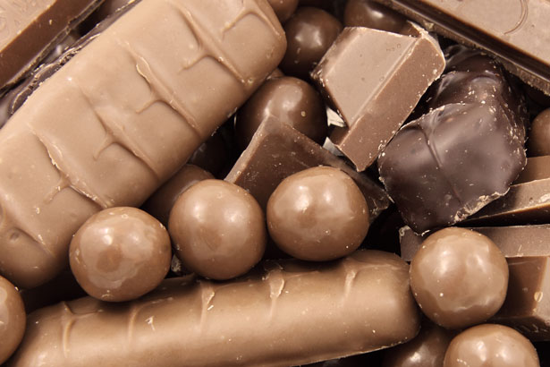

White Chocolate
Shhh... it's not really chocolate.

White chocolate is a chocolate confection made from cocoa butter, sugar and milk solids. White chocolate does not contain cocoa solids, which are found in other types of chocolate. It is characterized by a pale ivory color. The melting point of cocoa butter, the only cocoa bean component of white chocolate, is high enough to keep white chocolate solid at room temperature, as with milk chocolate and dark chocolate.
Milk Chocolate

Milk chocolate is solid chocolate made with milk added in the form of powdered milk, liquid milk, or condensed milk. In 1875 a Swiss confectioner, Daniel Peter, developed the first solid milk-chocolate using condensed milk, which had been invented by Henri Nestlé, Peter's neighbour in Vevey.
Dark Chocolate

Dark black chocolate (also known as black chocolate, plain chocolate, or sour chocolate) is a form of chocolate containing cocoa solids, cocoa butter and sugar, without the milk found in milk chocolate. Government and industry standards of what products may be labeled "dark chocolate" vary by country and market.